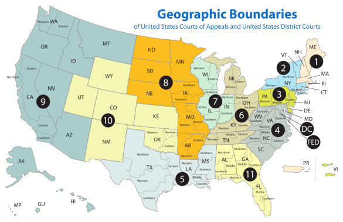
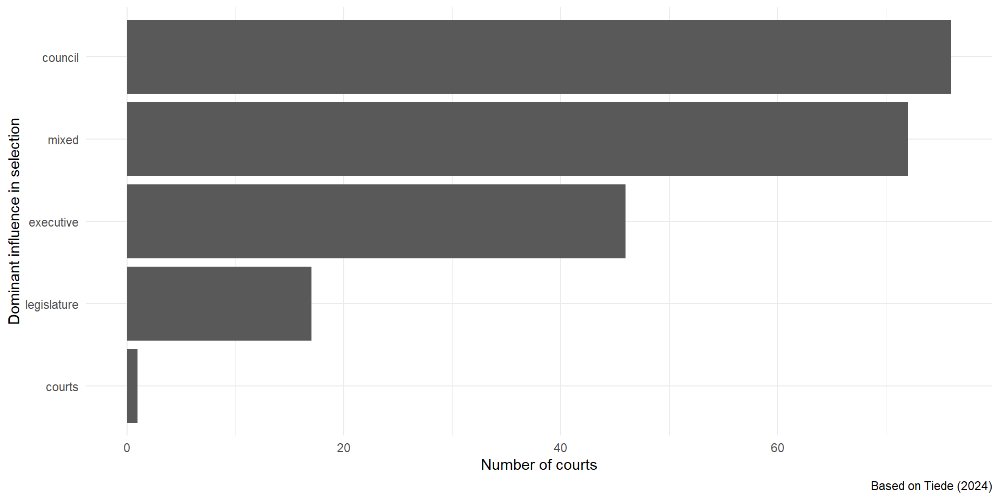
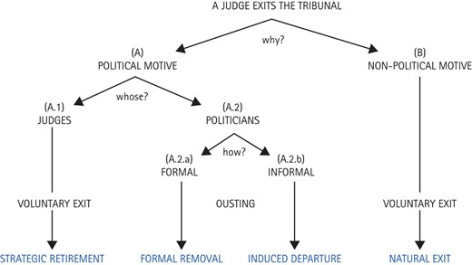

Appointing and Monitoring Judges
Week 5
Controlling the judiciary
how do politicians keep tabs on judges?
how do they ensure that delegation of judicial power does not go beyond what they originally envisaged?
how do judges govern themselves?
Ex ante and ex post control
we can generally divide tools of political control in two categories (Helfer and Slaughter 2005)
ex ante: mechanisms of control designed prior to the court’s operation
ex post: mechanisms of control developed in response to the court’s operation
Jurisdiction
a key decision liable to influence how much and over what types of issues a court has power concerns jurisdiction (or access / standing / locus standi)
jurisdiction is abour regulating access to courts
- in general, the more actors can access a court, the greater its power
Defining jurisdiction
there are multiple ways of defining (= constraining) a court’s jurisdiction and usually more than one is used at once
geographical (e.g. US Courts of Appeals)
substantive (e.g. UK Supreme Court re Scottish criminal law)
personal (e.g. ECJ rules on standing)
Jurisdiction (geography)
There are differences across geographical boundaries. For example, some US Courts of Appeal are more liberal than others (Broscheid 2011)
Jurisdiction (substantive)
it is common for higher courts to be able to rule on “points of law only”
- they (and the litigants) are confined to dealing with the facts as established by lower courts
many countries create specialized courts to deal with some branches of law
- arguable boundaries invite “forum shopping”
Jurisdiction (personal)
- the CJEU has famously restrictive access rules for private litigants
Any natural or legal person may […] institute proceedings against an act addressed to that person or which is of direct and individual concern to them, and against a regulatory act which is of direct concern to them and does not entail implementing measures.
Appointment procedures
the most salient ex ante mechanism
the institutional designer and appointer balance their preferences for judicial independence and accountability (Dunoff and Pollack 2017)
there is considerable variety in how judges are appointed around the world
Variation in appointment procedures
Appointment procedures
mixed systems encourage a tendency for each appointing branch to select judges most closely aligned with its interests
- this cleavage may supersede partisan preferences (Tiede 2020, 2024)
mixed systems can hinder the functioning of collegial courts
- but greater diversity can also improve the quality of decisions
more veto players => more moderate judges
Judicial councils
institutional vehicle for judicial self-governance
in charge of appointing judges, managing budgets, promotions and discipline
strongly promoted by international organizations in the 2000s
trade-off between insulation and external accountability (Garoupa and Ginsburg 2009)
Tenure
the tenure of judges can differ markedly by country and type of court
most ordinary judges are appointed for life, sometimes with age limits
judges on constitutional and international courts are often term-bound and can sometimes be reappointed
Reappointment
the prospect of reappointment influences judicial behaviour (Hall 2014; Stiansen 2022)
- judges who are up for reappointment are more responsive to the preferences of their principal
non-renewable terms can however damage a court’s effectiveness
- turnover can affect retention of expertise
Transparency
the principals’ ability to monitor (and therefore punish/reward) judicial behaviour is conditional on transparency
while decisions are always public, individual votes and dissents are not
do principals have other means of obtaining information about the voting of judges?
Renewal and transparency
| Low transparency | High transparency | |
| Life tenure | Low incentive | Low incentive |
| Renewable fixed term | Low incentive | High incentive |
| Non-renewable fixed term | Low incentive | Low incentive |
Judicial exits
judges are rarely forced out of office through removal procedures
- court curbing governments prefer lowering the mandatory retirement age (e.g. Hungary in 2012, Poland in 2017, El Salvador in 2021)
the motivations behind a judge quitting can be more varied however
Judicial exits
Source: Pérez-Liñán and Castagnola (2024)
Strategic retirements
hypothesis: federal judges in the US prefer to retire under presidents of the same political party that first appointed them (Stolzenberg and Lindgren 2022; Nixon and Haskin 2000)
Stolzenberg and Lindgren (2022) argue that this behaviour is driven more by reciprocity norms (giving back to appointing party) than ideology
in contrast, Deschler and Sen (2024) show that recently, moderate Republican judges have withheld retirement under more conservative presidents such as Trump (ideology > partisanship/reciprocity)
older judges are more inclined to retire strategically (Hansford, Savchak, and Songer 2010)
understudied outside the US (Pérez-Liñán and Araya 2017)
Judicial elections
perceived rejection of “elite-driven” judicial selection
tried out in revolutionary France (1790) and Central America post Spanish independence
38 US states (as of 2024) elect judges to state supreme courts (Lim 2013; Lim, Snyder Jr., and Strömberg 2015; Besley and Payne 2013)
- the 2023 Wisconsin Supreme Court election saw 51 million USD in campaign spending
Judicial elections
Driscoll and Nelson (2015) show the impact of Bolivia introducing judicial elections
judges became much more diverse as a result (in contrast to the US)
confidence in the judiciary increased among government supporters but declined overall
Mexico has been holding judicial elections for a portion of offices since 2025
pre-selected candidates by evaluation committees of each branch of government
mired in disagreement and controversy
References

POLS0113: Judicial Politics